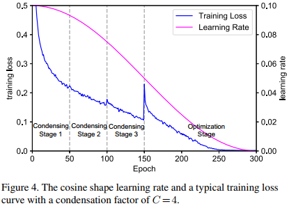
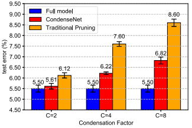
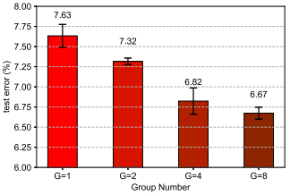
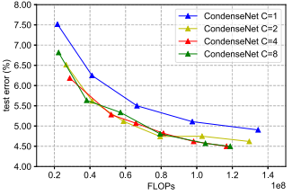

主要工作
本文主要贡献是提出了一种比ShuffleNets还要高效很多的CondenseNets。
主要思想
该论文认为普通的卷积模型:layer-by-layer的连接模式，模型需要在每一层都去重复最前面层的特征，因此DenseNet的短连接所引导的特征重用对这个问题有一定的缓解，但论文中猜想对于DenseNet这样的密集短连接，会引入一些冗余的浅层特征，因此论文提出了一种方法来减少这种冗余，并形成了一种高效的模型结构。
主要方法
将一层中的输出特征分成多组（分组也是学习得到），并在训练过程中按照分组逐渐移除组中与一些不重要的输入特征之间的连接。
效率对比
在ImageNet数据上进行图像分类实验， CondenseNets相比于同样正确率的DenseNets模型，计算量减少到了DenseNets的\(\frac{1}{10}\)，相比于相近top-1错误率的MobileNet，CondenseNets计算量为MobileNet的\(\frac{1}{2}\)。
具体实现
 如图，在Condensing阶段训练过程中，使用sparsity inducing regularization重复训练模型， 并丢弃权重较低的特征（在丢弃时，保证同一个Group的卷积核有相同的稀疏连接，方便在测试阶段使用一个标准的group convolution实现计算），在optimization阶段，固定分组，并训练卷积核。图中解释可能有误，图上说是的每个Condensing stage 移除\((C-1)/C\)比例的连接，但后面又说每个Condensing stage之后移除\(1/C\)比例的连接，我觉得应该是后面一种说法正确
如图，在Condensing阶段训练过程中，使用sparsity inducing regularization重复训练模型， 并丢弃权重较低的特征（在丢弃时，保证同一个Group的卷积核有相同的稀疏连接，方便在测试阶段使用一个标准的group convolution实现计算），在optimization阶段，固定分组，并训练卷积核。图中解释可能有误，图上说是的每个Condensing stage 移除\((C-1)/C\)比例的连接，但后面又说每个Condensing stage之后移除\(1/C\)比例的连接，我觉得应该是后面一种说法正确
特征凝聚原则(Condensation Criterion)
普通的卷积核是四维的\(O \times R \times W \times H\)，其中\(O\)代表输出的特征个数，\(R\)代表输入的特征个数，\(W\)代表卷积核宽度，\(H\)代表卷积核高度，如果简化为\(1 \times 1\)卷积，则卷积核可以看成一个\(O \times R\)的矩阵\(F\), 对于某个分组\(G\), 其卷积权重表示为\(F^G\)，\(F^g_{ij}\)则表示分组\(g\)中第\(j\)个输入到第\(i\)个输出的权重。
在筛选的过程中，第\(j\)输入特征的重要程度由\(\sum_{i=1}^{O/G}|F^g_{ij}|\)来衡量，丢弃的过程可以简单描述为：对于矩阵\(F^g\)，如果其某一列的\(L_1\)正则项较小，则把这一列的全都置0。
为了激励同一组的卷积倾向于同样的一组输入特征，作者没有使用逐元素的\(L_1\)正则化，而是使用其提出的一种group-lasso正则化，其正则化项计算如下： \[ \sum_{g=1}^G \sum_{j=1}^R \sqrt{\sum_{i=1}^{O/G}{F^g_{ij}}^2} \] 这样的的正则化项由于其值由每个\(F^g\)中的每一列的最大值来主导，因此会倾向于把\(F^g\)中某一列整体变小，满足要求。
特征凝聚因子(Condensation Factor)
一组输出所连接到的输入个数比例不一定是\(\frac{1}{G}\)，这里定义特征凝聚因子\(C\)，允许每一组输出连接到\(\lfloor\frac{R}{C}\rfloor\)个输入特征。
特征凝聚过程(Condensation Procedure)
在上面的Learn Group Convolution的学习和预测示意图中，在经过\(C - 1\)个Condensing stage之后，只有\(1 - (C - 1) \times \frac{1}{C}=\frac{1}{C}\)比例的输入特征保留下来。
epoch设置：Condensing stage \(C-1\)的训练epoch设置为\(\frac{M}{2(C-1)}\),其中M表示总共的训练epoch数。
学习速率：使用余弦状学习速率，初始值为0.1,300个epoch下降到0，如下图所示。

上图在150代的时候，训练loss跳跃上升，论文解释说是因为在最后一个Condensing stage，去掉了当前一半的连接导致。
特征选择和重排(Index Layer)
在经过训练丢弃一些卷积核权重之后，层间的连接非常杂乱，为了高效的在硬件上实现组卷积操作，增加了Index Layer用于特征选择和重排。(暂时没有看到有关Index Layer的具体实现方法的描述)
模型结构设计(Architecture Design)
- 普通的DenseNet结构在每个dense block之后特征个数增加\(k\)(常数)个，作者在一篇论文中看到在DenseNet中更深的层更多的依赖深层特征而非浅层特征，因此作者决定将k改为指数增长，加大深层特征所占的比例，所以设置\(k=2^{m-1}k_0\)，其中\(m\)表示层的编号，\(k_0\)是一个常数。
- 为了提高特征重用率，作者将原始输入（或者原始输入对应大小的平均池化下采样）连接到了所有的层。
在CIFAR-10数据上进行的对比实验
特征凝聚因子对比实验

在DenseNet50的基础上，对比了不同模型权重丢弃程度(特征凝聚因子)下的测试集错误率，如下图，蓝色表示原始模型，黄色表示其他的模型剪枝方法，红色表示作者提出的凝聚模型，三个凝聚模型的分组个数\(G\)都设置为4，这里将特征凝聚因子\(C\)作为横坐标，表示使用不同的特征凝聚因子的效果，其它的模型剪枝方法最终也是保留\(\frac{1}{C}\)比例的连接作为对比
分组个数实验

在四个对比实验中，特征凝聚因子\(C\)使用固定值：8。
特征凝聚因子效率对比

这里作者说所有实验固定分组个数\(G=4\)，然后观察不同的凝聚因子\(C\)下的测试集错误率和FLOPs的关系。这里没搞清楚，按理说\(G\)和\(C\)一旦确定，那么FLOPs就是固定的，为什么这里对于每个\(C\)可以变化FLOPs？模型不同？暂时没有看到相应的描述